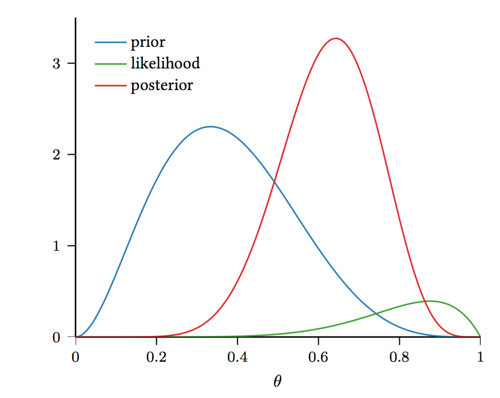

Estimating Probabilities from data
Remember that the Bayes Optimal classifier: "all we needed was" $P(Y|X)$. Most of supervised learning can be viewed as estimating $P(X, Y)$.
There are two cases of supervised learning:
- When we estimate $P(Y|X)$ directly, then we call it discriminative learning.
- When we estimate $P(X|Y)P(Y)$, then we call it generative learning.
Some machine learning algorithms (e.g. kNN) do not estimate $P(Y|X)$ but only the function $f(x)=\textrm{argmax}_y P(Y=y|x)$. This is also considered discriminative learning. Not estimating the probabilities can provide some flexibility in terms of what approach is used, but one loses the advantage of knowing probability estimates of the labels and may not have a good reading on the certainty of a prediction.
So, how can we estimate probabilities from data?
There are many ways to estimate probabilities from data.
Simple scenario: coin toss
Suppose you find a coin and it's ancient and very valuable. Naturally, you ask yourself, "What is the probability that it comes up heads when I toss it?"
You toss it $n = 10$ times and get results: $H, T, T, H, H, H, T, T, T, T$.
What is $P(H)$?
We observed $n_H$ heads and $n_T$ tails. So, intuitively,
$$
P(H) \approx \frac{n_H}{n_H + n_T} = 0.4
$$
Can we derive this formally?
Maximum Likelihood Estimation (MLE)
Let $P(H) = \theta$. $\theta$, however, is unknown and all we have is $D$ (sequence of heads and tails). So, what we can do to estimate $\theta$ is to choose its value such that the data is most likely.
MLE Principle: Find $\hat{\theta}$ to maximize the likelihood of the data, $P(D\mid \theta)$:
\begin{align}
\hat{\theta}_{MLE} = argmax_{\theta} \,P(D\mid \theta)
\end{align}
For the sequence of coin flips we can use the binomial distribution to model $P(D\mid \theta)$:
\begin{align}
P(D\mid \theta) &= \begin{pmatrix} n_H + n_T \\ n_H \end{pmatrix} \theta^{n_H} (1 - \theta)^{n_T}
\end{align}
Now,
\begin{align}
\hat{\theta}_{MLE} &= argmax_{\theta} \begin{pmatrix} n_H + n_T \\ n_H \end{pmatrix} \theta^{n_H} (1 - \theta)^{n_T} \\
&= argmax_{\theta} \,log\begin{pmatrix} n_H + n_T \\ n_H \end{pmatrix} + n_H \cdot log(\theta) + n_T \cdot log(1 - \theta) \\
&= argmax_{\theta} \, n_H \cdot log(\theta) + n_T \cdot log(1 - \theta)
\end{align}
We can now solve for $\theta$ by taking the derivative and equating it to zero. This results in
\begin{align}
\frac{n_H}{\theta} = \frac{n_T}{1 - \theta} \Longrightarrow n_H - n_H\theta = n_T\theta \Longrightarrow \theta = \frac{n_H}{n_H + n_T}
\end{align}
Check: $1 \ge \theta \ge 0$ (no constraints necessary)
- MLE gives the explanation of the data you observed.
- If $n$ is large and your model/distribution is correct (that is $\mathcal{H}$ includes the true model), then MLE finds the true parameters.
- But the MLE can overfit the data if $n$ is small. It works well when $n$ is large.
- If you do not have the correct model (and $n$ is small) then MLE can be terribly wrong!
For example, suppose you observe H,H,H,H,H. What is $\hat{\theta}_{MLE}$?
Simple scenario: coin toss with prior knowledge
Assume you have a hunch that $\theta$ is close to $\theta'=0.5$. But your sample size is small, so you don't trust your estimate.
Simple fix: Add $m$ imaginery throws that would result in $\theta'$ (e.g. $\theta = 0.5$). Add $m$ Heads and $m$ Tails to your data.
$$
\hat{\theta} = \frac{n_H + m}{n_H + n_T + 2m}
$$
For large $n$, this is an insignificant change.
For small $n$, it incorporates your "prior belief" about what $\theta$ should be.
Can we derive this formally?
The Bayesian Way
Model $\theta$ as a random variable, drawn from a distribution $P(\theta)$.
Note that $\theta$ is not a random variable associated with an event in a sample space.
In frequentist statistics, this is forbidden. In Bayesian statistics, this is allowed.
Now, we can look at $P(\theta \mid D) = \frac{P(D\mid \theta) P(\theta)}{P(D)}$ (recall Bayes Rule!), where
- $P(D \mid \theta)$ is the likelihood of the data given the parameter(s) $\theta$,
- $P(\theta)$ is the prior distribution over the parameter(s) $\theta$, and
- $P(\theta \mid D)$ is the posterior distribution over the parameter(s) $\theta$.
Now, we can use the Beta distribution to model $P(\theta)$:
\begin{align}
P(\theta) = \frac{\theta^{\alpha - 1}(1 - \theta)^{\beta - 1}}{B(\alpha, \beta)}
\end{align}
where $B(\alpha, \beta) = \frac{\Gamma(\alpha) \Gamma(\beta)}{\Gamma(\alpha+\beta)}$ is the normalization constant. Note that here we only need a distribution over a binary random variable. The multivariate generalization of the Beta distribution is the Dirichlet distribution.
Why using the Beta distribution?
- it models probabilitis ($\theta$ lives on $\left[0,1\right]$ and $\sum_i \theta_i =1$)
- it is of the same distributional family as the binomial distribution (conjugate prior) $\rightarrow$ the math will turn out nicely:
\begin{align}
P(\theta \mid D) \propto P(D \mid \theta) P(\theta) \propto \theta^{n_H + \alpha -1} (1 - \theta)^{n_T + \beta -1}
\end{align}
Note taht in general $\theta$ are the parameters of our model. For the coin flipping scenario $\theta = P(H)$.
So far, we have a distribution over $\theta$. How can we get an estimate for $\theta$?

Maximum a Posteriori Probability Estimation (MAP)
For example, we can choose $\hat{\theta}$ to be the most likely $\theta$ given the data.
MAP Principle:
Find $\hat{\theta}$ that maximizes the posterior distribution $P(\theta \mid D)$:
\begin{align}
\hat{\theta}_{MAP} &= argmax_{\theta} \,P(\theta \mid D) \\
&= argmax_{\theta} \, log P(D \mid \theta) + log P(\theta)
\end{align}
For out coin flipping scenario, we get:
\begin{align}
\hat{\theta}_{MAP} &= argmax_{\theta} \;P(\theta | Data) \\
&= argmax_{\theta} \; \frac{P(Data | \theta)P(\theta)}{P(Data)} && \text{(By Bayes rule)} \\
&= argmax_{\theta} \;log(P(Data | \theta)) + log(P(\theta)) \\
&= argmax_{\theta} \;n_H \cdot log(\theta) + n_T \cdot log(1 - \theta) + (\alpha - 1)\cdot log(\theta) + (\beta - 1) \cdot log(1 - \theta) \\
&= argmax_{\theta} \;(n_H + \alpha - 1) \cdot log(\theta) + (n_T + \beta - 1) \cdot log(1 - \theta) \\
&\Longrightarrow \hat{\theta}_{MAP} = \frac{n_H + \alpha - 1}{n_H + n_T + \beta + \alpha - 2}
\end{align}
- As $n \rightarrow \infty$, $\hat\theta_{MAP} \rightarrow \hat\theta_{MLE}$.
- MAP is a great estimator if prior belief exists and is accurate.
- If $n$ is small, it can be very wrong if prior belief is wrong!
"True" Bayesian approach
Note that MAP is only one way to get an estimator for $\theta$. There is much more information in $P(\theta \mid D)$. So, instead of the maximum as we did with MAP, we can use the posterior mean (end even its variance).
\begin{align}
\hat{\theta}_{post\_mean} = E\left[\theta, D\right] = \int_{\theta} \theta P(\theta \mid D) d\theta
\end{align}
For coin flipping, this can be computed as $\hat{\theta}_{post\_mean} = \frac{n_H + \alpha}{n_H + \alpha + n_T + \beta}$.
Posterior Predictive Distribution
To make predictions using $\theta$ in our coin tossing example, we can use
$$
P(heads \mid D) = \int_{\theta} P(heads, \theta \mid D) d\theta = \int_{\theta} P(heads \mid \theta, D) P(\theta \mid D) d\theta = \int_{\theta} \theta P(\theta \mid D) d\theta
$$
Here, we used the fact that we defined $P(heads) = \theta$ and that $P(heads) = P(heads \mid D, \theta)$ (this is only the case for coin flipping - not in general).
In general, the posterior predictive distribution is
$$
P(Y\mid D,X) = \int_{\theta}P(Y,\theta \mid D,X) d\theta = \int_{\theta} P(Y \mid \theta, D,X) P(\theta | D) d\theta
$$
Unfortunately, the above is generally intractable in closed form and
sampling techniques, such as Monte Carlo approximations, are used to approximate the distribution.
Machine Learning and estimation
In supervised Machine learning you are provided with training data $D$. You use this data to train a model, represented by its parameters $\theta$. With this model you want to make predictions on a test point $x_t$.
- MLE Prediction: $P(y|x_t;\theta)$ Learning: $\theta=argmax_\theta P(D;\theta)$. Here $\theta$ is purely a model parameter.
- MAP Prediction: $P(y|x_t,\theta)$ Learning: $\theta=argmax_\theta P(\theta|D)\propto P(D \mid \theta) P(\theta)$. Here $\theta$ is a random variable.
- "True Bayesian" Prediction: $P(y|x_t,D)=\int_{\theta}P(y|\theta)P(\theta|D)d\theta$. Here $\theta$ is integrated out - our prediction takes all possible models into account.